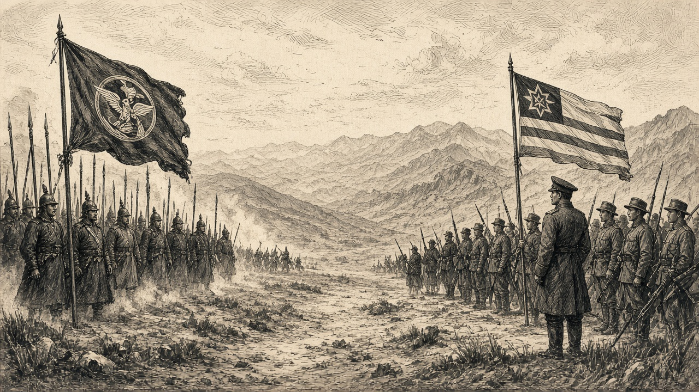
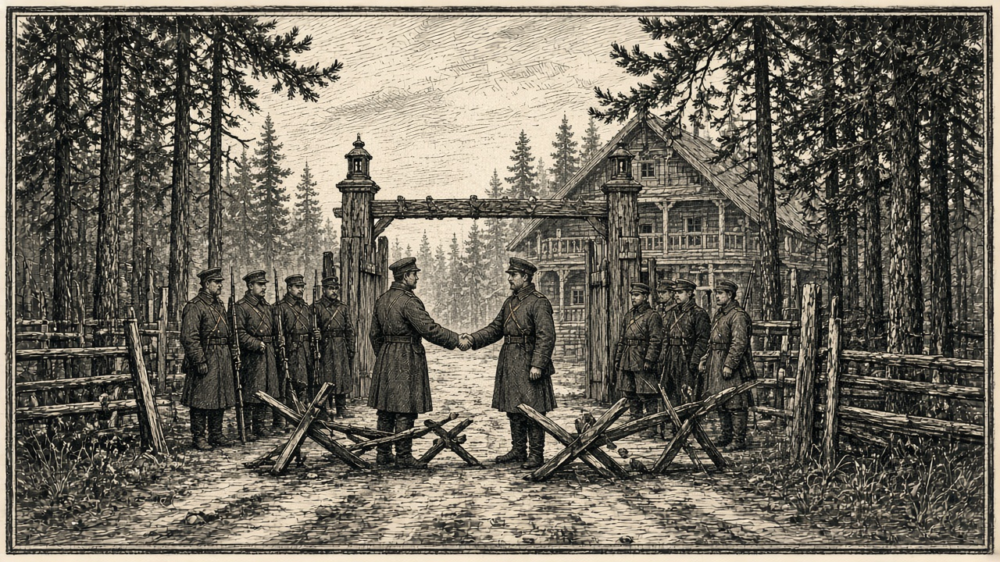
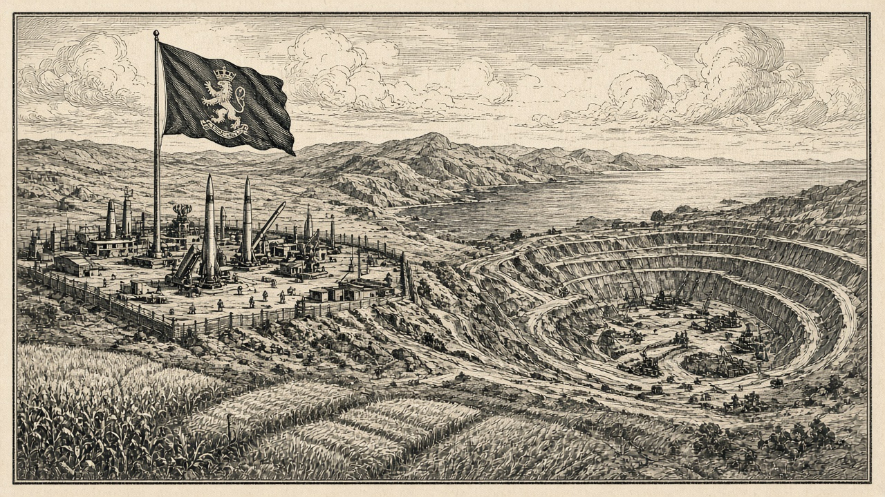

泰平天国対テキスタン共和国戦争勃発
控えどおり第212期に開戦 泰平損害500 テキスタン損害400 テキスタン砲兵が泰平空兵を全滅

【総合部】第212期、泰平天国対テキスタン共和国の戦争が始まった。第207期に予告された宣戦控えどおりの開戦である。泰平は攻撃側。公報損害は泰平五百人、テキスタン四百人。テキスタンの砲兵が泰平の空兵部隊を全滅させた。青海から泰平へ五万二千七百人の移民が到着し、泰平は快く受け入れた。詳報は2面。


蒼森、青海・シンジケートと停戦 白波は金野の基地と鉱脈を占領
蒼森辺境伯領は青海共和国・シンジケート連邦と停戦合意で戦争を終結した。残る交戦国は黒潮自治国のみで、蒼森は黒潮へ停戦を打診した。同じ週も食料はゼロで、暴動八か所と兵站（19,10）への殺到があった。白波王国は金野伯爵領のミサイル基地（63,17）と露天鉱脈（62,16）を占領した。金野となのですの戦闘では金野損害七千九百人、なのです損害千百人。なのですは（64,15）を地ならしして領有した。火災二十一件・八万九千百人。国特集は9面の金野伯爵領。